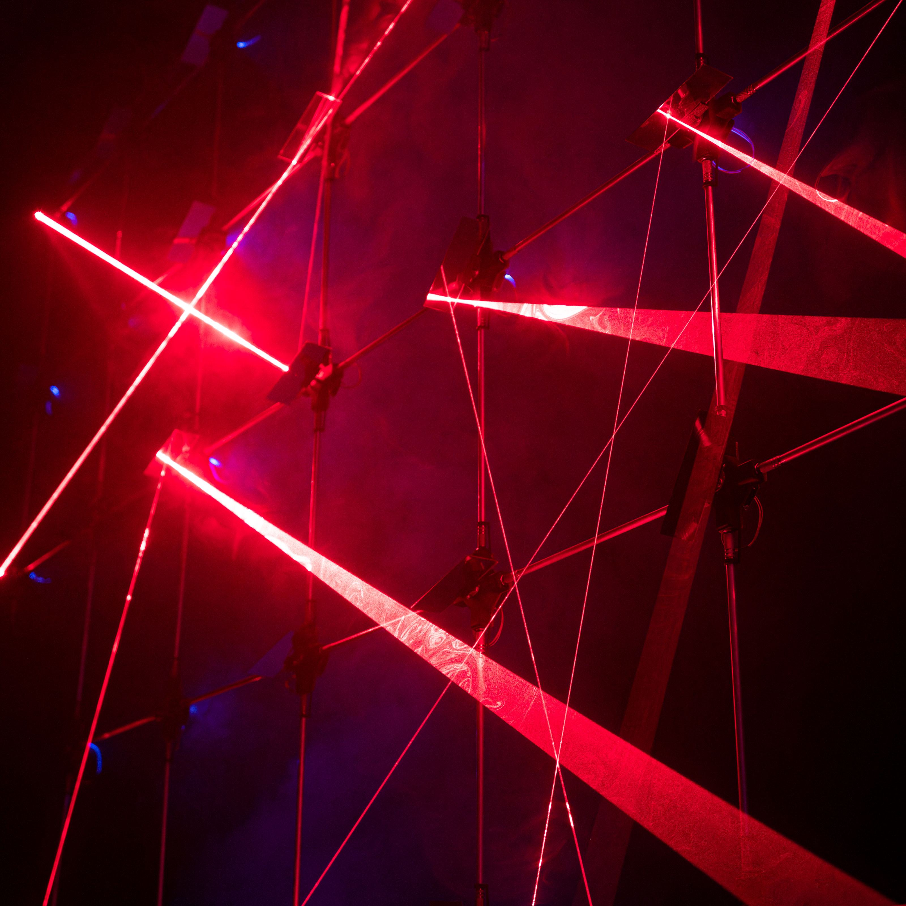
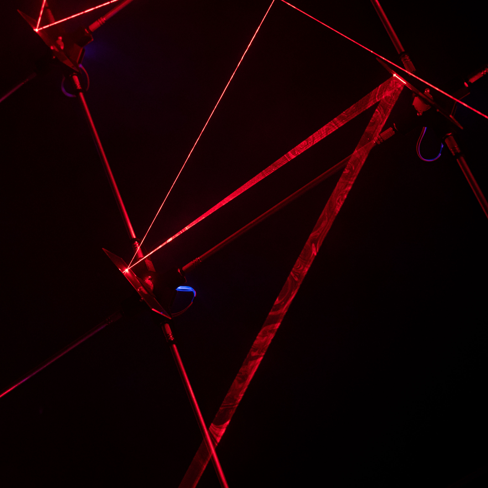
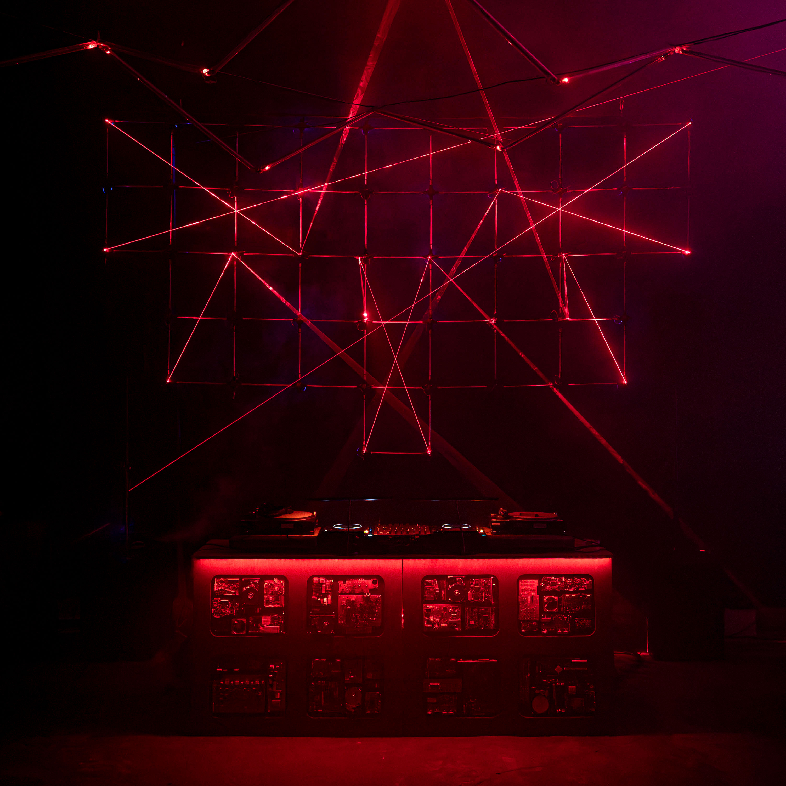
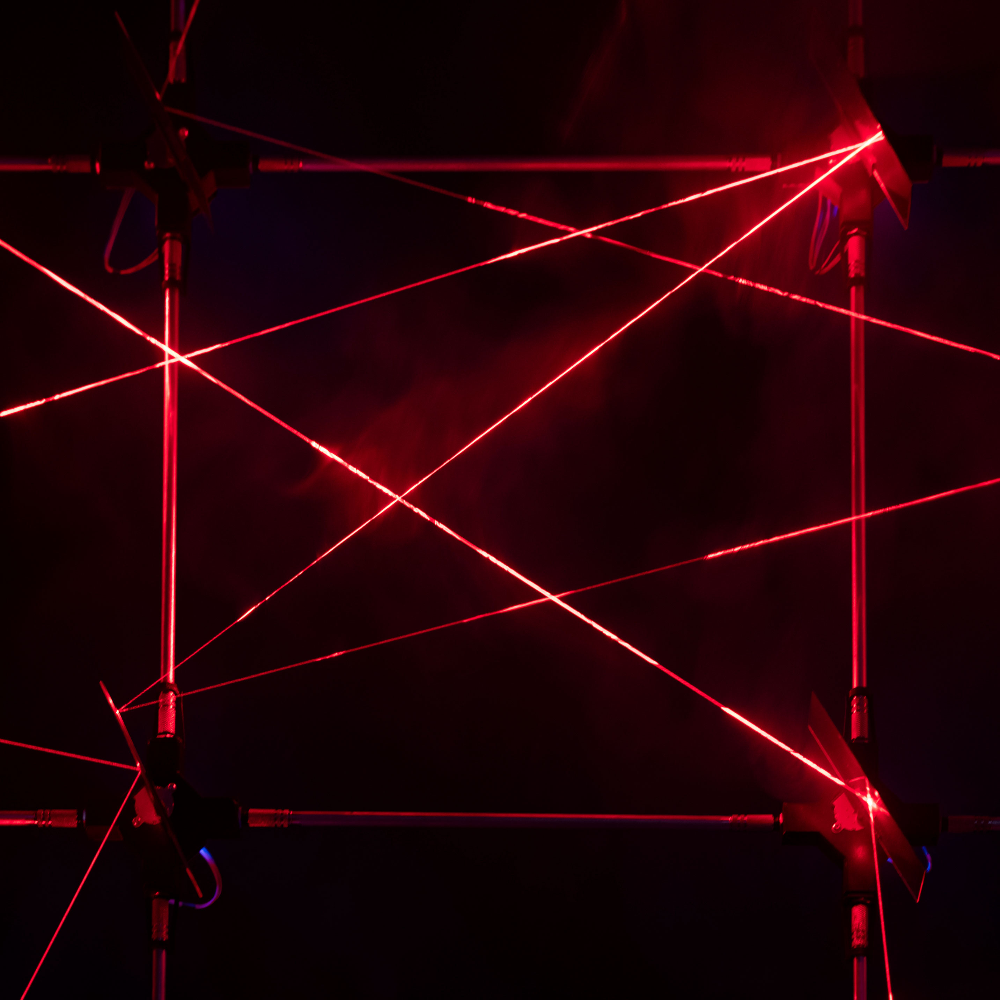

RAYARRAY
is a node-based generative light installation that reflects collective
behavior and explores the emerging systems.
/////////////////////////
Year of production: 2022-2023
50 Nodes made of a custom PCB in a 3D printed bracket on which the
motor controller and an ESP8266 micro-controller are located. The four
connectors are 1/4“ jack sockets. A node can carry a mirror or a laser.
100 Jumpers made of 35mm alimunium tube with 1/4“ jacks on the ends. The Jumpers
form the static framework as well as the power supply for the nodes.
The ESPs receive signals via WIFI from a processing application
and use the data to operate the motors.
Find the code, schematics and technical details on GitHub
/////////////////////////

The laser beams entering the grid are reflected by a multitude of mirrors, forming
a complex pattern. The rotation of the mirrors creates a continuously changing
light sculpture, sometimes chaotic, sometimes organized. The name RAYARRAY is
composed of the two terms RAY and ARRAY. "Ray" is in this case a laser beam, while
"array" comes from informatics and describes an arrangement or a field. RAYARRAY means
as much as "A field of rays." and is a reflection on collective behavior, since
the individual nodes act autonomously from each other but are visibly connected
by the entering laser beams and the resulting reflections.

The light as a source of information is constantly reflected from node to node
and generates the perceivable system. A field of possibilities that emerges from the
obscurity. The longer the observation of the light, the more distinctive and at the same
time reoccurring patterns appear. RAYARRAY demonstrates that an organized structure can
emerge from collective chaos. RAYARRAY as a closed system represents
a room that breaks the illusion of our reality, because it creates a new room using the
laser beams, another room apart from the absolute existing one.

RAYARRAY was developed during my bachelor thesis on the subject RAVE A detailed
reflection on the installation can be found in this context.

Made in collaboration with Lucca Vitters
Photos by Benjamin Schlemmer